Configurer un Vcenter sur srv backup veeam availability suite v9
Pour faire suite à la procédure d’installation de Veeam Availability Suite v9 on va maintenant configurer un vCenter dessus.
Configuration du vcenter sur veeam backup
Lancez d’abord la console Backup & Replication et ajoutez un serveur VMWARE VSPHERE :
Indiquez le nom DNS ou l’adresse IP de votre vCenter :
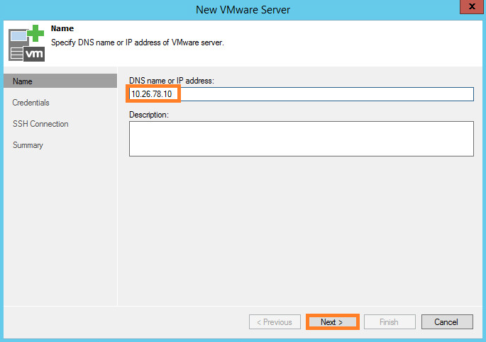Créez de nouvelles informations d’identifications pour votre vCenter dans Backup & Replication :
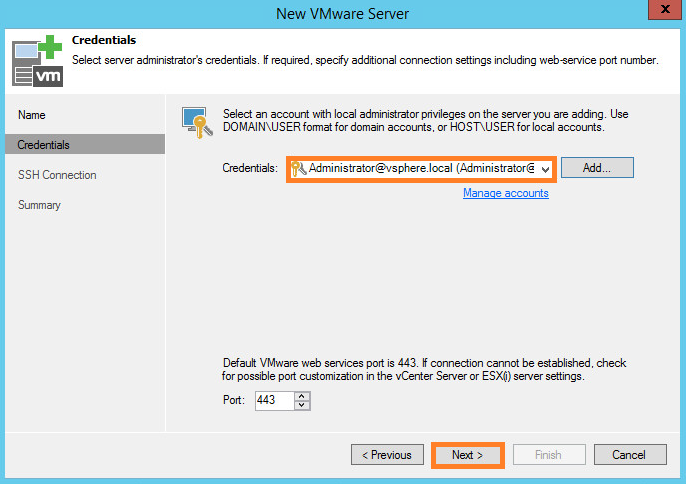Vous aurez une fenêtre vous indiquant que le certificat de votre vCenter ne peux être authentifié, c’est normal, car il est autosigné, cliquez sur Connect :
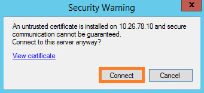Validez les paramètres et cliquez sur Finish :
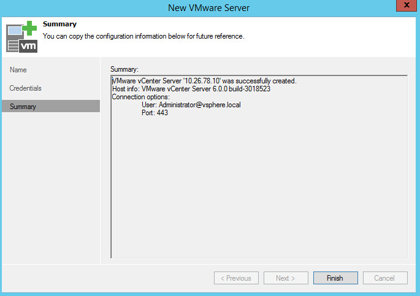Maintenant, on va ajouter un nouveau stockage pour nos sauvegardes.
J’ai monté une partition iSCSI sur mon serveur de 600Go pour ça.
Cliquez sur Add Repository :
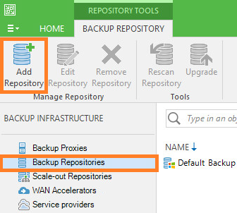Donnez-lui un petit nom :
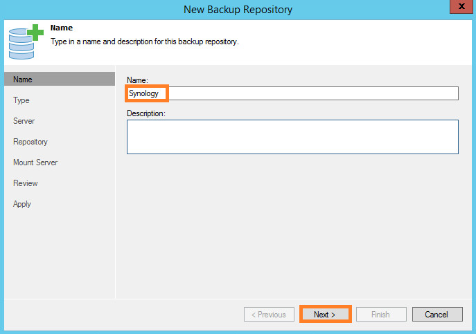Pour moi ça va être un serveur Microsoft Windows Server étant donné que c’est une partition locale :
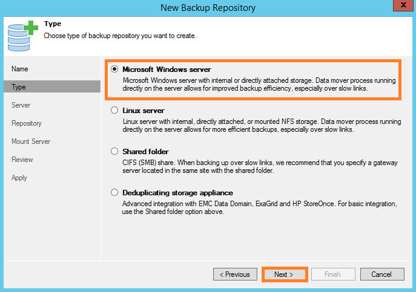Choisissez le serveur hébergeant le repository et cliquez sur Populate, sélectionnez enfin votre partition et cliquez sur Next :
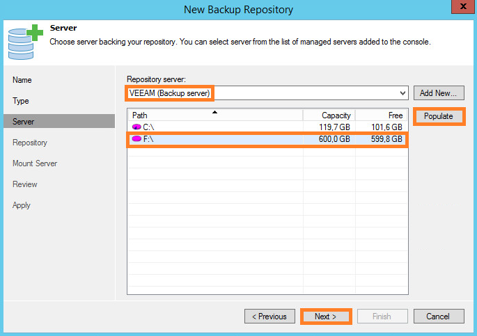Vérifiez les informations et cliquez sur Next :
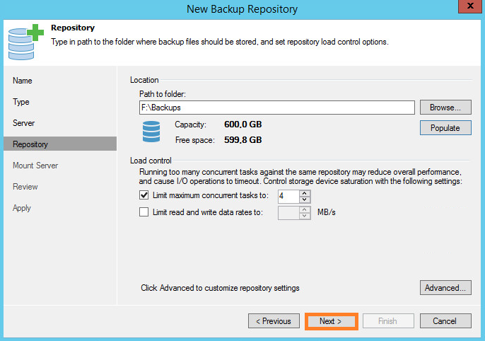Vérifiez que vPower NFS est bien activé et cliquez sur Next :
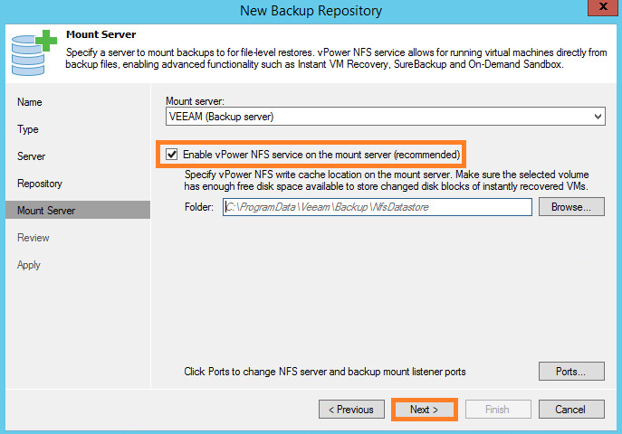 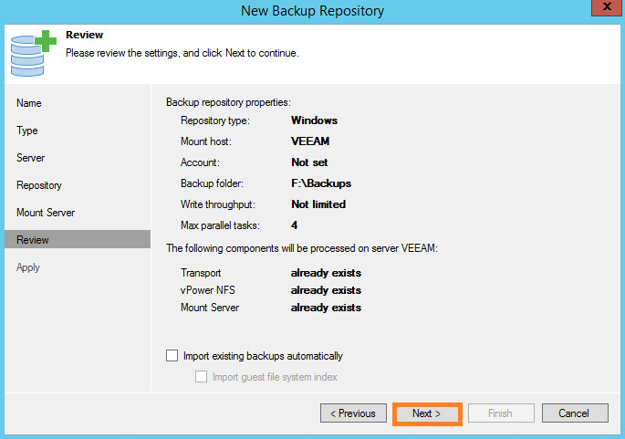B&R va ajouter votre nouveau stockage :
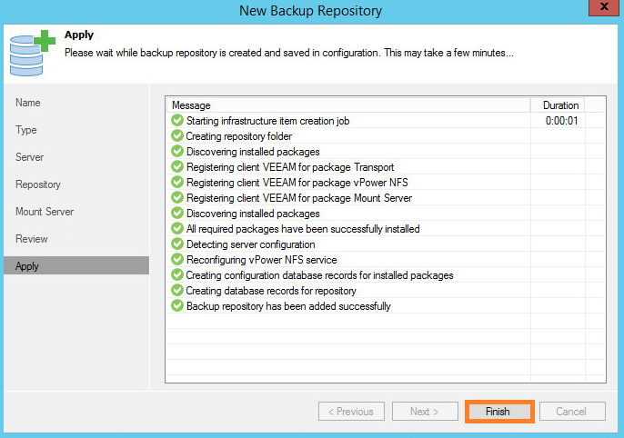Cliquez sur Yes pour configurer ce nouveau stockage en tant que stockage par défaut pour les nouvelles tâches de sauvegarde :
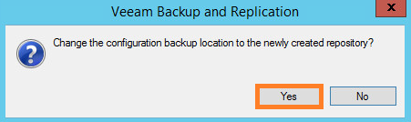Maintenant, ajoutez une tâche de sauvegarde en cliquant sur Backup Job :
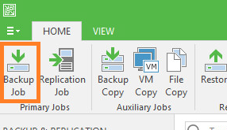Donnez-lui un petit nom :
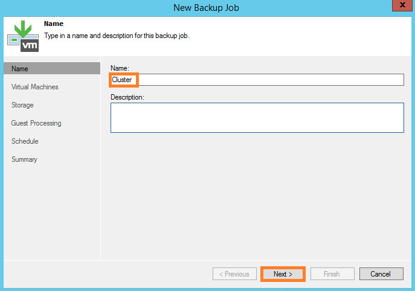Sélectionnez les datacenters / Cluster / Dossiers / Pools de ressources / Machines virtuelles que vous souhaitez sauvegarder :
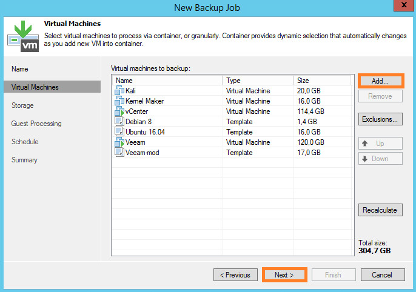Sélectionnez bien le stockage que l’on vient de créer :
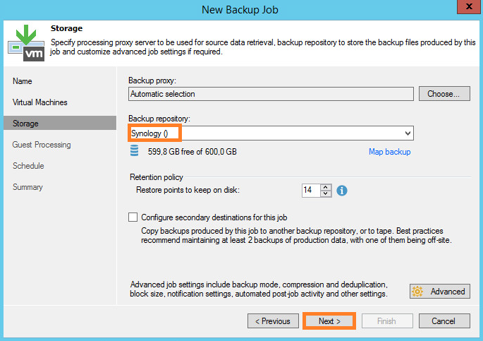Cliquez sur Finish et laissez la tâche de sauvegarde faire la première sauvegarde complète :
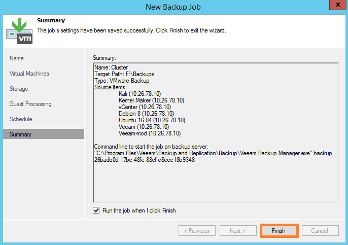Maintenant, lancez la console Backup Enterprise Manager et cliquez sur Backup Servers :
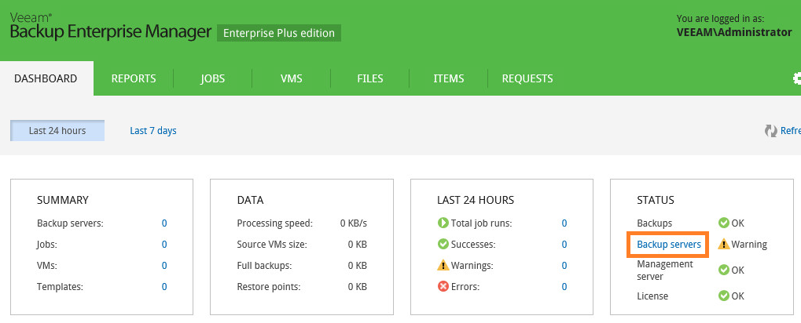Vous verrez qu’aucun serveur Backup & Replication n’est configuré dans la console, cliquez sur Backup Servers :
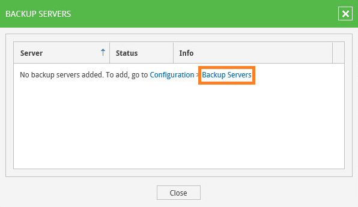Maintenant, cliquez sur Add…
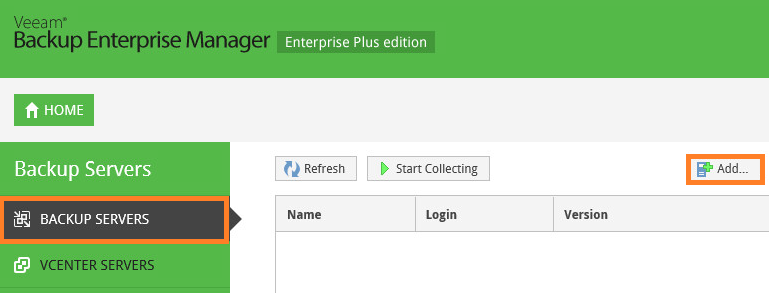Ajoutez le serveur local en spécifiant le compte utilisé par Veeam Backup & Replication :
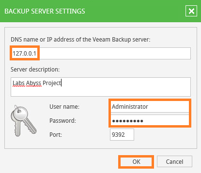Vous verrez maintenant tout ce qu’il se passe sur vos Backup & Replication depuis la console Backup Enterprise Manager :
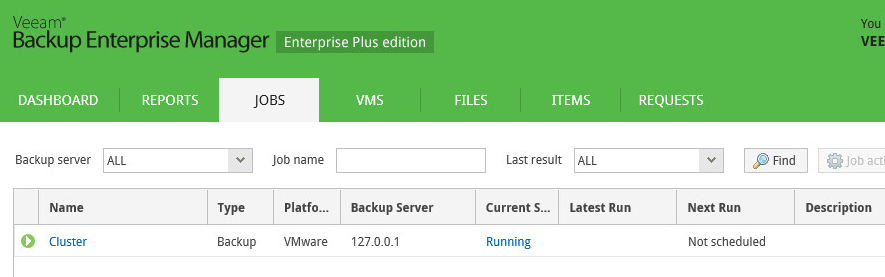CONFIGURATION DU VCENTER SUR VEEAM ONE :
Lancez la console Veeam One et cliquez sur Add Server :
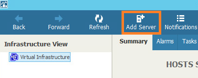Cliquez ensuite sur VMWARE SERVER :
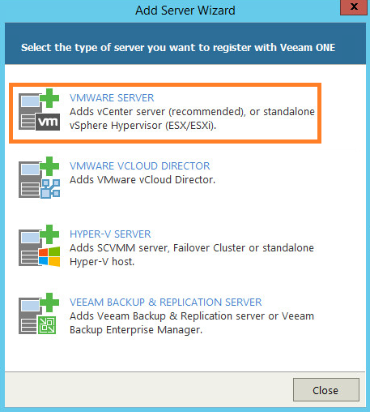Rentrez l’adresse IP ou le nom DNS de votre vCenter et sélectionnez le bon type de serveur :
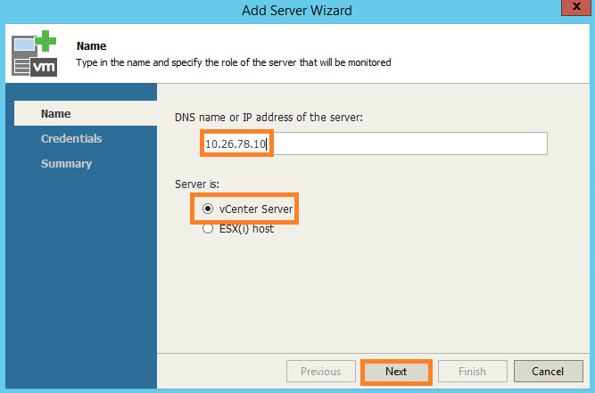Spécifiez l’administrateur SSO :
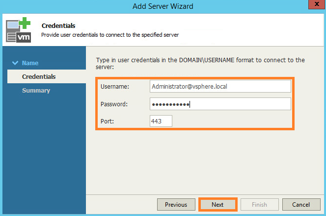Vérifiez les paramètres et cliquez sur Finish :
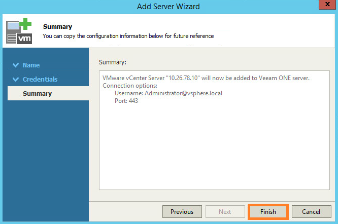Vous aurez ensuite une surveillance complète de votre vCenter 🙂
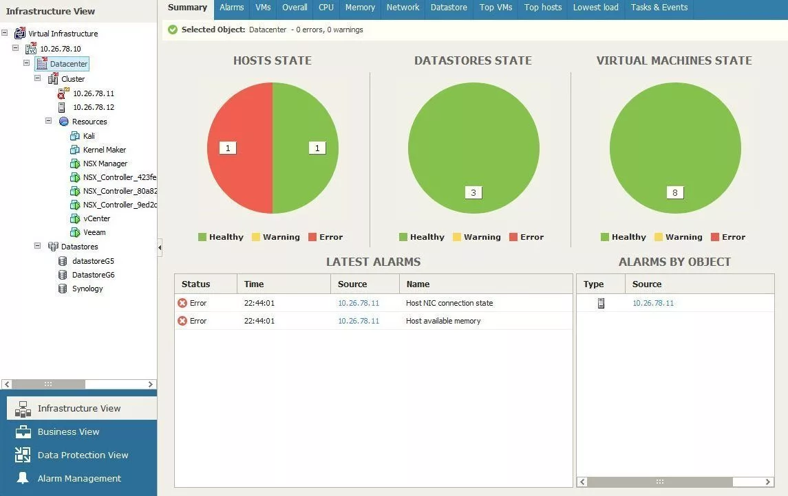


Installation des composants veeam backup
Montez votre .ISO de Veeam Backup & Replication, lancez le Setup.exe et choisissez Veeam Backup & Replication :
Sur un serveur vierge, .NET Framework devrait être absent, laissez Veeam l’installer pour vous :
Redémarrez le serveur :
L’installateur de Backup & Replication devrait se relancer, si ce n’est pas le cas, relancez-le à la main :
Acceptez les EULA et fournissez votre fichier de licence :
Installez tous les composants :

Maintenant, l’installateur vous permettra d’installer les dépendances manquantes sur votre système en appuyant simplement sur Install :
Une fois que la validation est effectuée, cliquez sur Next :
Si vous faites un serveur totalement isolé pour Veeam comme moi, alors vous pouvez laisser les paramètres par défaut :
Si tout se passe bien, Backup & Replication devrait s’installer sans faire d’histoires :
Maintenant, lancez l’installateur de Backup Enterprise Manager.
Backup Enterprise Manager est une console qui vous permettra de gérer plusieurs instances de Veeam Backup & Replication :
Lancez l’installateur :
Acceptez les EULA et rentrez votre licence. Installez Veeam Cloud Connect si vous souhaitez exporter vos sauvegardes chez OVH par exemple :
Installez encore une fois les dépendances manquantes à l’aide de l’installateur :
Validez le système et continuez l’installation :
Encore une fois, laissez les paramètres par défaut si vous êtes sur un serveur totalement isolé :
Et quittez l’installateur :
Montez l’ISO de One et installez Veeam One Server :
Lancez l’installateur :
Acceptez les EULA et fournissez votre fichier de licence :
Si vous êtes toujours comme moi sur un serveur dédié alors vous pouvez laisser une installation en mode basique :

Normalement vous devriez avoir seulement deux composants manquants dans les prérequis, le reste ayant été installé par Veeam Backup :
Une fois tous les composants installés, poursuivez :
Spécifiez le compte Administrateur local de votre serveur ou mieux, un compte dédié :
Utilisez l’instance SQL Server existante et créez une nouvelle base SQL Server :
Laissez les ports par défaut :
Cliquez sur Skip virtual infrastructure configuration pour l’instant :
Et validez l’installation :
Si tout se passe bien, l’installateur arrivera au bout de sa tâche
l’installation de Exchange 2016 de A à Z pour un nouveau domaine. On va parler du montage de l’AD, de l’Exchange lui-même, de la configuration des boites mail, de l’envoi/réception, de la configuration des DNS et de la sécurisation.
DESCRIPTION DE L’INFRASTRUCTURE
Je vais utiliser deux machines virtuelles CX41 du Cloud Hetzner et un domaine en .ovh :
* Nom de domaine : tap.ovh (dédié aux emails)
* Active Directory : TAP-DC01 (Windows Serveur 2012 R2 Standard) | Addresse IP fixe : 138.201.175.185
* Exchange 2016 : TAP-MS01 (Windows Serveur 2012 R2 Standard) | Addresse IP fixe : 138.201.175.188
RECORDS DNS DE BASE CHEZ OVH
Voici un extrait de la zone DNS de base chez OVH :
Pour le moment, le domaine lui-même redirige sur le serveur Exchange TAP-MS01. L’autodiscover fait de même et les records TAP-MS01 et TAP-DC01 redirigent vers les bons serveurs qui utilisent des IP publiques.
RECORDS DNS POUR LES EMAILS
Nous allons devoir ajouter deux types de champs au minimum dans les DNS pour que cela fonctionne sur internet.
Les champs MX, qui indiqueront où se trouvent les serveurs email et les champs SPF qui indiqueront quels serveurs emails sont autorisés à envoyer pour le domaine.
Si j’utilisais l’exchange que nous allons installer pour envoyer des emails directement je devrais faire des records comme ceci :
Dans mon cas, j’utilise un relais pour l’envoi et un antispam nommé proofpoint, je dois donc utilisé ce qui est fourni :
INSTALLATION DU SERVEUR ACTIVE DIRECTORY
Lancez la commande PowerShell suivante pour installer le rôle nécessaire :
Install-WindowsFeature AD-Domain-Services
Une fois l’installation terminée, ouvrez le gestionnaire de serveur et lancez la promotion :
Créez une nouvelle foret avec votre nom de domaine :
Créez le mot de passe de récupération du domaine :
Validez le nom NetBios :
Cliquez ensuite sur « Install » pour lancer la promotion du serveur en contrôleur de domaine :
INSTALLATION DU SERVEUR EXCHANGE
Installez d’abord la fonctionnalité « Media Foundation » avec Powershell :
Install-WindowsFeature Server-Media-Foundation -Restart
Après le redémarrage, téléchargez et installez ensuite le « Unified Communications Managed API 4.0 Runtime » :
Connectez ensuite votre serveur Exchange au domaine :
Une fois que c’est fait, redémarrez le serveur et connectez-vous avec l’administrateur du domaine dessus :
Téléchargez la dernière version de Exchange 2016 à l’adresse suivante :
https://technet.microsoft.com/en-us/library/jj907309(v=exchg.160).aspx
Montez l’ISO et lancez ensuite l’installateur.
Vérifier la disponibilité de mises à jour :
Utilisez les paramètres recommandés :
Installez le rôle de Mailbox et cochez la case en dessous pour installer automatiquement les rôles et fonctionnalités manquantes :
Sélectionnez le répertoire d’installation d’exchange (ce qui inclut le stockage des mailbox) :
Rentrez le nom de l’organisation :
Rentrez le nom de l’organisation :
L’installation va maintenant se lancer, vous pouvez aller boire une bière gluten-free parce que ça va être long, très long …
Redémarrez le serveur à la fin de l’installation :
CRÉATION D’UNE BOITE DE TEST ET CONFIGURATION DES RÉPERTOIRES VIRTUELS :
Connectez-vous à l’ECP depuis votre serveur Exchange : https://localhost/ecp/
Ensuite, créez une nouvelle mailbox de test pour la suite :

Allez ensuite dans « Serveurs » -> éditez la configuration de votre serveur Exchange -> « Outlook Anywhere » -> et remplissez les url internes et externes selon la configuration de votre domaine :
Maintenant, allez dans « répertoires virtuels » et éditez encore une fois les url internes et externes de toutes les applications :
Redémarrez maintenant votre serveur et connectez-vous à l’utilisateur que vous venez de créer par OWA pour tester l’envoi d’email interne :
CONFIGURATION D’UN CONNECTEUR D’ENVOI
Vous aurez besoin d’un connecteur d’envoi pour envoyer des emails à d’autres personnes sur internet. Dans mon cas j’utilise proofpoint en tant qu’antispam et relai SMTP, je me servirais donc de lui pour envoyer des emails.
Allez dans « Mail Flow » (flux de courrier) -> « Send Connectors » et ajoutez-en un :
Donnez lui un petit nom et sélectionner « internet » :
Renseignez le FQDN de votre relais SMTP :
Renseignez la liste des domaines distants qui devront passer par ce connecteur. Vu que l’on souhaite l’utiliser pour tout le monde, on met un petit astérisque : *
Renseignez les serveurs qui devront utiliser ce connecteur, ici nous n’avons que notre exchange :
Et envoyez des emails à l’extérieur pour tester 🙂
TEST DE L’AUTODISCOVER
Si vous avez suivi mes instructions pour le DNS tout va rouler tout seul pour Outlook :
Si un truc merde, vérifier que la racine du domaine et au pire l’autodiscover renvoi bien vers l’ISS du serveur mail.
INSTALLATION D’UN CERTIFICAT LET’S ENCRYPT ET SÉCURISATION DE SSL
Téléchargez la dernière release stable de Let’s Encrypt Win Simple
Décompressez l’archive de Let’s Encrypt Win Simple et placez le dossier extrait à la racine de C: (en le renommant comme moi éventuellement) :
Ensuite, éditez le fichier settings_default.config.
Cherchez le passage suivant :
La plate-forme d'apprentissage en ligne
de LinkedIn
LinkedIn Learning combine le contenu de Lynda.com : cours en ligne, cours, formation, didacticiels avec les données et le réseau professionnels de LinkedIn. LinkedIn compte désormais plus de 450 millions de profils de membres et a collecté des informations sur l'évolution des emplois, des industries, des organisations et des compétences au fil du temps. Les cours sont disponibles gratuitement avec un abonnement LinkedIn Premium pour les particuliers. Une version entreprise sera également bientôt disponible.
En général, il semblerait que les étudiants soient assez divisés en ce qui concerne l'expérience d'apprentissage sur LinkedIn Learning. Certains disent qu’ils ont apprécié les cours, d’autres - qu’ils ont été complètement déçus. Cependant, la majorité des utilisateurs conviennent qu'il existe certainement des domaines dans lesquels LinkedIn Learning pourrait faire un meilleur travail. Que ce soit le prix ou la variété des difficultés de cours - il y a toujours place à amélioration